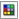

ыстрые ссылки на процедуры, описанные на этой странице:
• |
• |
• |
• |
• |
• |
• |
Цвета фона, переднего плана и заливки можно выбирать в области управления цветом, цветовых палитрах, при помощи программ просмотра цветов, гармонии цветов или смесителей, а также путем взятия образцов цвета из изображения.
Для получения сведений о применении выбранных цветов см. разделы Применение однородных заливок, Рисование и Работа с объектами.
В области управления цветом можно просмотреть выбранные цвета фона, переднего плана и заливки, а также выбрать новые цвета. Цвет переднего плана используется при применении всех инструментов рисования, а также для цвета текста, когда он вводится впервые. Цвет фона используется для фона в окне изображения, а образец цвета заливки указывает на выбранный тип и цвет заливки.
Цветовая палитра — это набор образцов цвета. В некоторых программах цветовые палитры известны как «палитры образцов».
В Corel PHOTO-PAINT цветовая палитра по умолчанию зависит от цветового режима изображения. Например, если открыть изображение CMYK, в окне изображения появится палитра CMYK, а если открыть изображение в цветовом режиме палитры — появится палитра RGB.
Можно выбрать цвета переднего плана, фона и заливки, используя цветовую палитру по умолчанию, в которой содержатся 99 цветов цветовой палитры RGB.
При создании нового изображения приложение автоматически создает пустую палитру, которая называется палитрой изображения. Она помогает отслеживать используемые цвета, обеспечивая их хранение. Для получения дополнительных сведений см. раздел Использование палитры изображения.
Цветовые палитры, входящие в библиотеку палитр, нельзя редактировать напрямую. Некоторые из них предоставлены сторонними производителями, например PANTONE, HKS Colors и TRUMATCH. Рекомендуется использовать книгу образцов от производителя, в которой представлен набор образцов цвета, с помощью которых можно точно определить, как будет выглядеть любой цвет при печати.
Некоторые палитры в библиотеках палитр — PANTONE, HKS Colors, TOYO, DIC, Focoltone и SpectraMaster — представляют собой наборы плашечных цветов. Если во время печати создаются цветоделения, то для каждого плашечного цвета требуется отдельная печатная форма, что может значительно повысить стоимость печати. Если необходимо использовать цветоделения, но при этом желательно избежать использования плашечных цветов, то можно преобразовать их в триадные цвета при печати. Для получения дополнительных сведений см. раздел Печать цветоделений.
Настраиваемые цветовые палитры могут содержать цвета из любой цветовой модели, включая палитры из библиотеки палитр, например палитры плашечных цветов. Можно сохранить настраиваемую цветовую палитру для дальнейшего использования. Для получения дополнительных сведений о работе с настраиваемыми цветовыми палитрами см. раздел Создание и редактирование настраиваемых цветовых палитр.
Если требуется использовать цвет, уже существующий в объекте или изображении, можно взять образец этого цвета, чтобы добиться полного соответствия. По умолчанию в качестве образца берется один пиксель в окне изображения.
Если в качестве образца требуется взять цвет из фотографии, то следует учесть, что область фотографии, цвет которой кажется сплошным, на самом деле может иметь оттенки цвета или смешанные цвета. В этом случае в качестве образца можно использовать средний цвет пикселей большей площади. Для выбора образца можно задать область величиной до 3 3 пикселей. В изображениях с высоким разрешением величина этой области может быть увеличена до 5 5 пикселей. Кроме того, можно взять образец пикселей из выбранной области.
Если требуется взять образцы множества цветов в окне изображения, чтобы потом использовать их, можно сохранить их в настраиваемой палитре. Для получения дополнительных сведений о настраиваемых цветовых палитрах см. раздел Создание и редактирование настраиваемых цветовых палитр.
Программы просмотра цветов позволяют получить представление о диапазоне цветов с помощью одномерных или трехмерных фигур. Программа просмотра цветов по умолчанию основана на цветовой модели HSB, однако можно использовать эту программу и для выбора цветов CMYK, CMY или RGB. Для получения сведений о цветовых моделях см. раздел Общие сведения о цветовых моделях.
Пример программы просмотра цветов
Когда цвет выбирается с помощью смесителей, выполняется комбинирование основных цветов с целью получения нужного цвета. В смесителе отображается сетка цветов, созданных с помощью четырех выбранных основных цветов.
Пример смесителей
Можно использовать веб-цвета при создании документов, которые будут опубликованы в Интернете. В Corel PHOTO-PAINT можно определить веб-цвета с помощью шестнадцатеричных значений RGB (например, #aa003f).
| Выбор цвета с помощью области управления цветом |
1. |
В области управления цветом в наборе инструментов дважды щелкните
один из следующих элементов:
|
• |
Образец цвета переднего плана |
• |
Образец Цвет фона |
2. |
Переместите ползунок цвета, чтобы задать диапазон цветов,
отображаемый в области выбора цвета.
|
3. |
Щелкните в области выбора цвета, чтобы выбрать цвет.
|
Цвета переднего плана, фона и заливки можно выбрать также с
помощью окна настройки «Цвет». Чтобы открыть окно настройки
«Цвет», щелкните Окно |
| Выбор цвета с помощью цветовой палитры по умолчанию |
Названия цветов можно отобразить, наведя курсор на образец.
|
Цвета переднего плана, фона и заливки можно выбрать также с
помощью окна настройки «Цвет». Чтобы открыть окно настройки
«Цвет», щелкните Окно |
Пример всплывающей цветовой палитры
| Выбор цвета с помощью цветовой палитры |
1. |
В области управления цветом в наборе инструментов дважды щелкните
один из следующих элементов:
|
• |
Образец цвета переднего плана |
• |
Образец цвета фона |
2. |
Перейдите на вкладку Палитры.
|
3. |
Выберите цветовую палитру в списке палитр.
|
4. |
Переместите ползунок цвета, чтобы задать диапазон цветов,
отображаемый в области выбора цвета.
|
5. |
Щелкните цвет в области выбора цвета.
|
Каждый образец плашечного цвета в цветовой палитре отмечен
небольшим белым квадратом.
|
Для всех цветов изображения следует использовать одну и ту же
цветовую модель; тогда цвета будут согласованы и можно будет
более точно представить, как они будут выглядеть в готовых
материалах. Для получения дополнительных сведений о точном
воспроизведении цветов см. раздел Использование управления
цветом.
|
Кроме того, доступ к цветовым палитрам можно получить в окне
настройки Цвет, нажав кнопку отображения цветовых палитр  и
выбрав палитру в списке. Если окно настройки Цвет закрыто,
выберите Окно |
| Взятие образца цвета |
1. |
Выберите инструмент Пипетка |
2. |
Щелкните изображение, чтобы выбрать цвет переднего плана.
|
Размер образца по умолчанию — 1 пиксель. |
В окне изображения появится образец для предварительного
просмотра рядом с инструментом Пипетка. Кроме того, рядом с
инструментом отобразится информационное окно со значениями
компонентов цветовой модели. При взятии образца цвета RGB
информационное окно также показывает шестнадцатеричное
значение цвета.
|
Можно также активировать инструмент Пипетка, нажав клавишу E.
Нажмите клавишу пробела, чтобы вернуться к предыдущему
выбранному инструменту.
|
Кроме того, можно использовать окно настройки Сведения об
изображении, чтобы просмотреть значения компонентов цветовой
модели для одного пикселя изображения, например, красный,
зеленый и синий компоненты пикселя в изображении RGB или его
шестнадцатеричное значение цвета. Если окно настройки Сведения
об изображении закрыто, выберите Окно |
| Выбор цвета с помощью программы просмотра цветов |
1. |
В области управления цветом в наборе инструментов дважды щелкните
один из следующих элементов:
|
• |
Образец цвета переднего плана |
• |
Образец цвета фона |
2. |
На странице Модели выберите цветовую модель в списке моделей.
|
3. |
Выберите Параметры |
4. |
Переместите ползунок цвета.
|
5. |
Щелкните цвет в области выбора цвета.
|
При выборе цвета вне гаммы принтера Corel PHOTO-PAINT
позволяет заменить его аналогичным цветом, который входит в
гамму принтера. Чтобы заменить цвет, щелкните образец Перенести
цвет в гамму, который находится слева от образца Новый цвет. Для
получения сведений о цветовой коррекции см. раздел Использование
управления цветом.
|
Для всех цветов изображения следует использовать одну и ту же
цветовую модель, тогда цвета будут согласованы и можно будет
более точно представить, как они будут выглядеть в готовых
материалах.Рекомендуется использовать ту же цветовую модель,
которая применяется для готовых материалов.
|
Кроме того, доступ к цветовым моделям можно получить в окне
настройки Цвет, нажав кнопку отображения программ просмотра
цветов и выбрав цветовую модель в списке. Если окно настройки
Цвет закрыто, выберите Окно |
Если выбран цвет, не входящий в гамму принтера, образец Перенести цвет в гамму отображается под кнопкой Пипетка.
Можно выбрать цвет заливки, дважды щелкнув образец цвета
заливки в области управления цветом. Нажмите кнопку
Однородная заливка |
Можно поменять местами старый цвет (текущий цвет переднего
плана или фона) и новый цвет (выбранный в области выбора цвета),
щелкнув Параметры |
| Выбор цвета с помощью смесителей |
1. |
В области управления цветом в наборе инструментов дважды щелкните
один из следующих элементов:
|
• |
Образец цвета переднего плана |
• |
Образец цвета фона |
2. |
Перейдите на вкладку Краскосмесители.
|
3. |
Выберите Параметры |
4. |
Откройте каждое меню выбора цвета и щелкните цвет.
|
5. |
Щелкните цвет в области выбора цвета.
|
|
Дополнительные возможности
|
|
|---|---|
|
Взятие образца цвета из изображения
|
Выберите инструмент Пипетка
|
Для создания перетекания цветов можно использовать только цвета
из цветовой палитры по умолчанию. Чтобы использовать для
создания перетекания другие цвета, необходимо изменить цветовую
палитру по умолчанию.
|
| |
1. |
Выберите Окно |
2. |
В окне настройки Цвет щелкните образец цвета заливки, фона или
переднего плана и выберите в списке палитру RGB по умолчанию.
|
3. |
Введите или вставьте из буфера значение в поле Шестнадцатеричное
значение и нажмите клавишу Tab.
|
Независимо от того, используется ли трехзначный (#fff) или шестизначный (#ffffff) формат, окончательное значение будет представлено в шестизначном формате. |
Шестнадцатеричные цветовые значения можно указывать только при
работе с цветами RGB.
|
В случае ввода недействительного шестнадцатеричного значения
цвет не изменяется. Последнее действительное шестнадцатеричное
значение будет показано при нажатии клавиши Tab.
|
Шестнадцатеричные цветовые значения можно просмотреть в строке
состояния.
|
Веб-цвета можно также выбирать из диалоговых окон Цвет
переднего плана, Цвет фона или Однородная заливка. Эти
диалоговые окна позволяют просматривать и копировать
шестнадцатеричные эквиваленты цветов, не входящих в палитру
RGB.
|
Copyright 2012 Corel Corporation. Все права защищены.